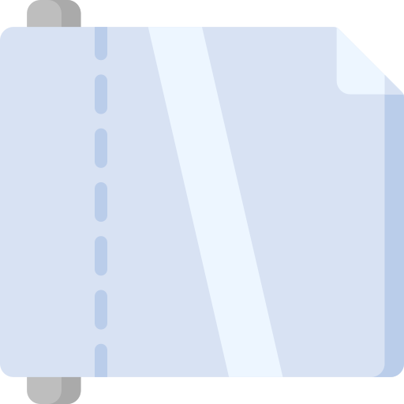
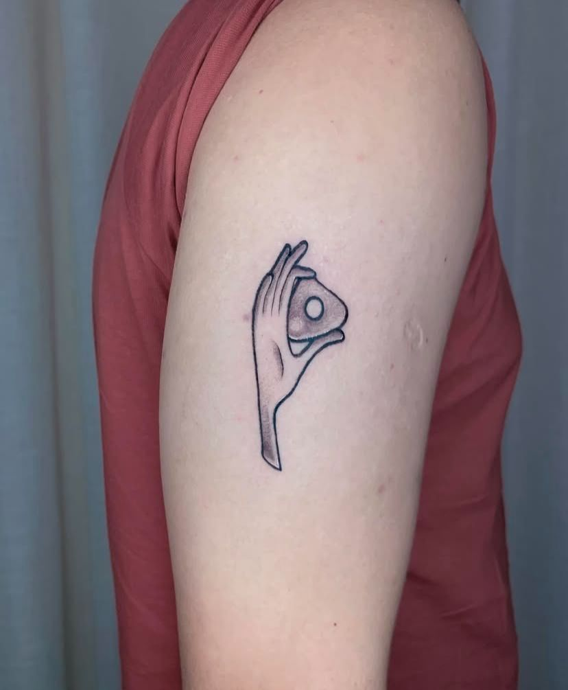
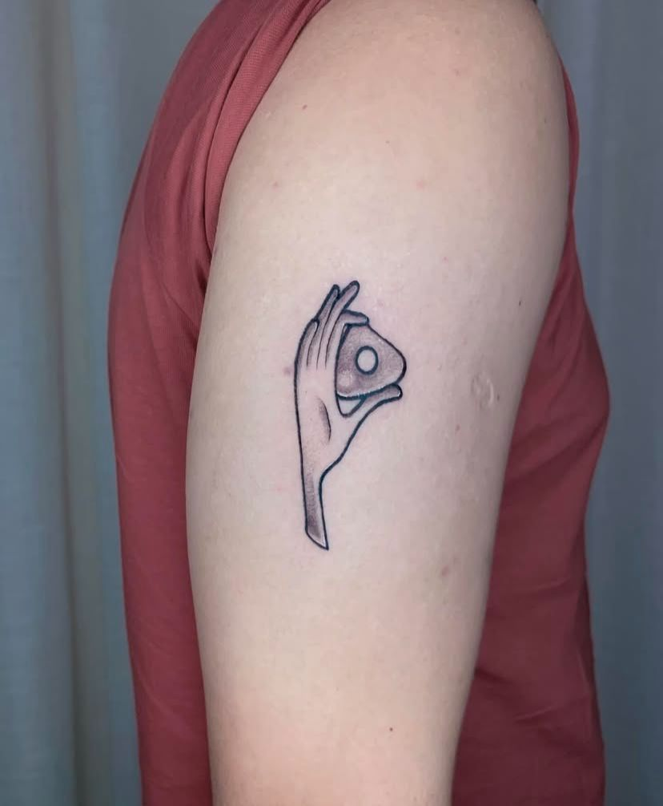
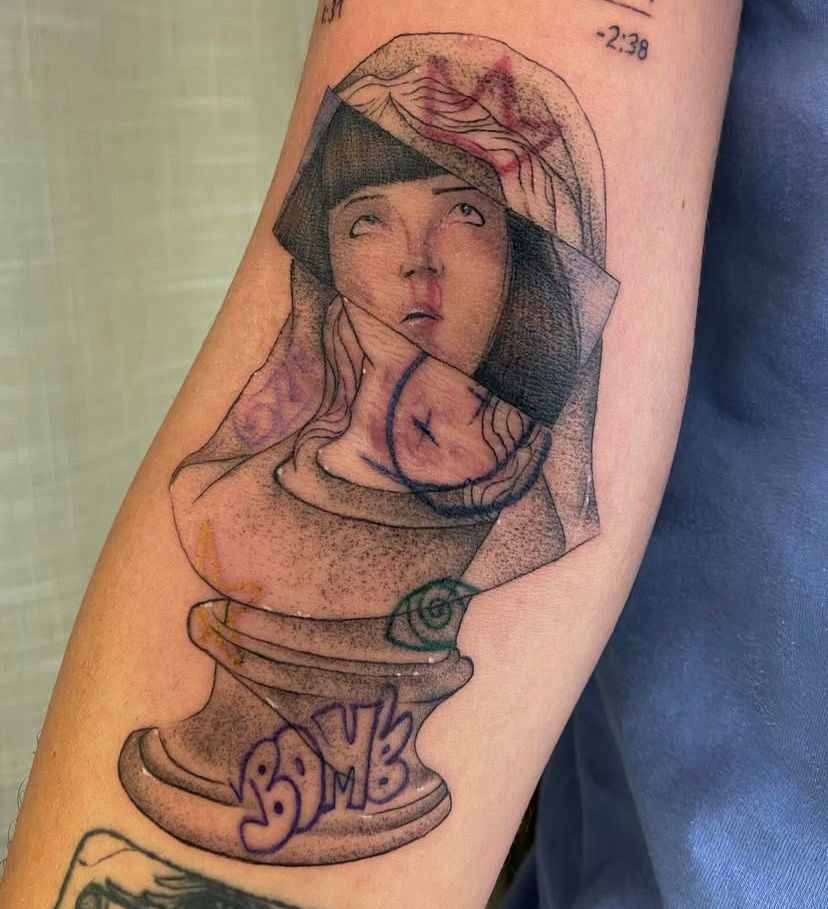
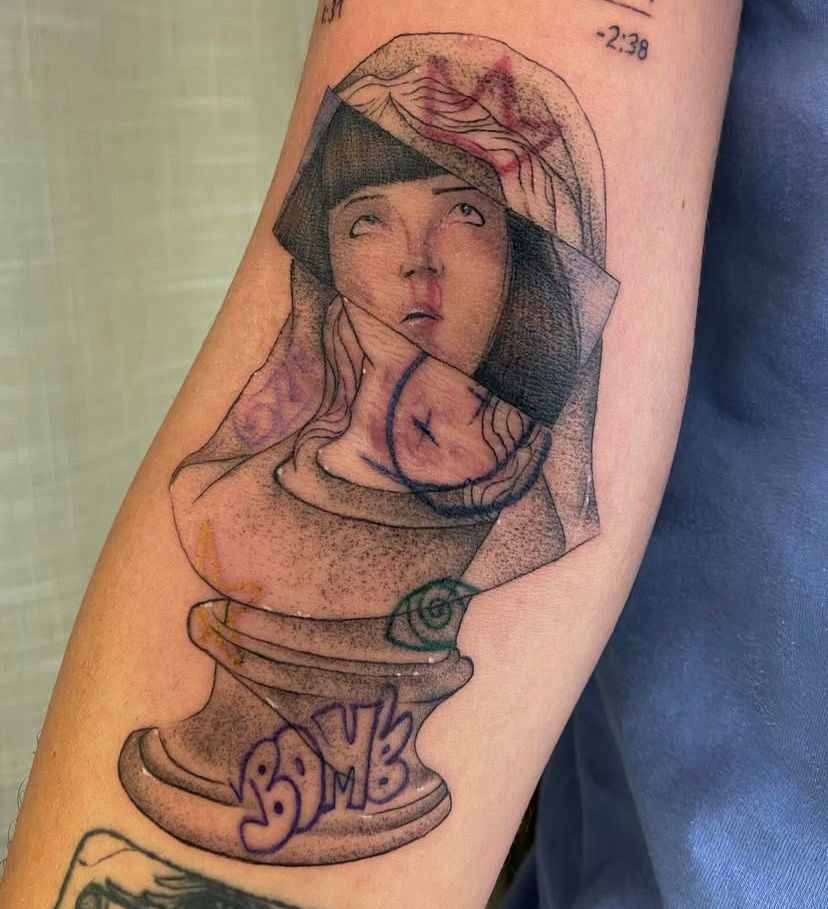
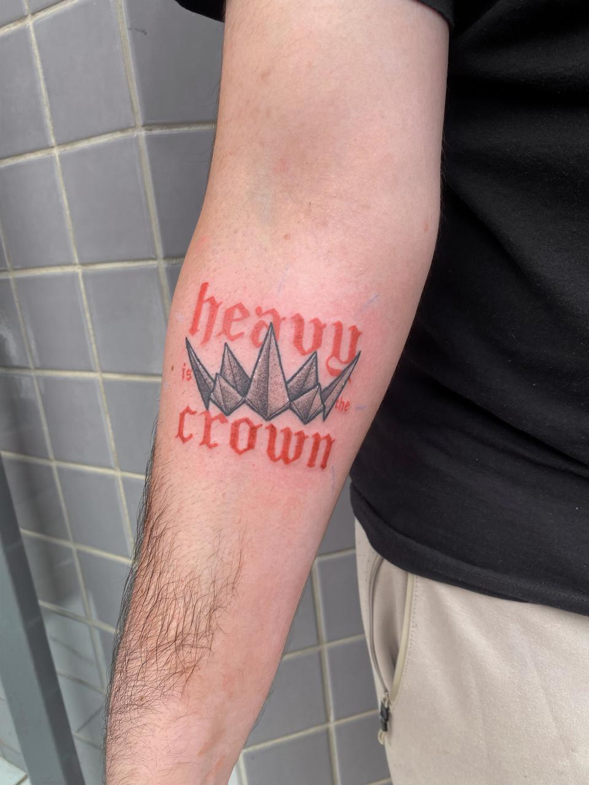
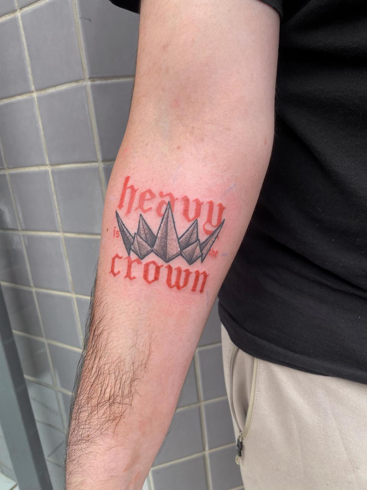

Agendamentos
Aqui eu transformo sua história em arte!
Todos os agendamentos são realizados apenas por WhatsApp,
entre em contato.
O que é o sinal?
É um valor o qual dá início ao seu projeto, é onde eu faço toda a
pesquisa necessária para realizar sua arte, organizar todo o equipamento
para o tão esperado dia e também é uma garantia e segurança que o
horário escolhido será feito a sua tatuagem.
Como funciona o sinal?
Após o orçamento, é momento de escolher seu horário e para confirmação
utilizamos o sinal. Vamos usar um orçamento de R$500,00 de exemplo:
É cobrado R$100,00 de sinal, onde no dia da sua sessão você pagará o
valor restante, que no caso desse exemplo, será R$400,00, fechando assim
o valor total de R$500,00.
Como faço o pagamento do sinal?
Pix -
É o jeito mais rápido para garantir que o horário escolhido seja
seu.
Cédulas ou Cartão -
Temos duas opções, por método link de pagamento ou comparecendo no
estúdio. Porém, nesse método o horário fica em aberto, tendo a
possibilidade de ser escolhido por outro cliente.
Não poderei comparecer no dia, é possível reagendar?
Sim! Existe um prazo de até
14 dias antes para
reagendamentos. Caso não seja comunicado dentro deste prazo, o sinal é
perdido e você terá de pagar por um novo sinal.
E se eu desistir, tem reembolso?
Apenas haverá reembolso caso feito um comunicado sobre em um prazo de
72h de antecedência da sua sessão.
Se a sua arte já estiver pronta você perde o reembolso visto que ao
pagar o sinal, você também está pagando para a criação da sua arte.
Cuidados
Pré-Tatuagem
Talvez você não saiba, mas antes de fazer sua tatuagem é importante
considerar alguns cuidados para garantir uma melhor experiência e
resultado.

Alimentação
Se alimente bem antes da sua sessão, pois uma refeição adequada
evita tonturas ou desmaios e também ajuda seu corpo a lidar com a
dor e o estresse da tatuagem.

Saúde
Verifique se sua pele está saudável e livre de irritações ou
infecções. Se você tiver alguma condição de pele, consulte um
dermatologista.

Álcool
Não consuma em um prazo de 72h antes da sua tatuagem, pois afeta a
cicatrização e aumenta o sangramento da área.

Hidratação
Esteja bem hidratado e, se possível, alguns dias antes utilize
hidratante corporal no local onde deseja realizar sua tatuagem.

Roupas
Venha com roupas confortáveis e, de preferência, com cores escuras
para não correr o risco de manchar.

Depilação
Usando um depilador nunca usado antes, depile a área do corpo que
você deseja ser tatuado.
Seguindo esses passos você estará pronto para fazer sua tatuagem!
Pós-Tatuagem
Durante o período de aproximadamente 45 dias, os cuidados após realizar
sua tatuagem são de suma importância. É onde se reduz o risco de
inflamações e falhas. Também é importante para que você tenha uma boa
cicatrização e um bom resultado final.

Limpeza
Lave somente com água corrente ou soro fisiológico e sabonete neutro, secar apenas com uma toalha limpa e com leve batidinhas para não agredir sua tattoo, evitar banhos com água quente nos 30 primeiros dias.

Plástico filme
Fazer a troca do plástico filme a cada três horas somente por três dias, sempre higienizando durante as trocas, repetir também quando a tatuagem estiver expelindo muito líquido ou se estiver com suor.
After Care
O after care que você comprou no nosso estúdio pode ser usada partir do terceiro dia, logo após o uso do plástico filmeu, no máximo 3x ao dia.
Alerta: não passar o after care muitas vezes e não esfregar muito pois pode acabar arrancando algumas casquinhas e ocorrendo falhas na sua tattoo.
Alimentação
É relevante de pessoa a pessoa, mas recomendado não ingerir alimentos muito gordurosos, sem bebidas alcoólicas, carne de porco ou nada que você não esteja habituado a comer nos 10 primeiros dias.

Verão
Não se expor muito ao sol, não entre no mar, piscinas ou lagoas, use somente o after care indicado e não retire as casquinhas, após cicatrizada, sempre utilizar protetor solar.
Hidratação e Cicatrização
Nossa tattoo leva até 45 dias para cicatrizar completamente, ao longo desse tempo, ela irá coçar bastante, o after care pode auxiliar para aliviar a coceira e após cicatrizada sempre hidrate ela com hidratantes.

Academia
Não é recomendado frequentar nas primeiras duas semanas, o suor aumenta o risco de infecção e a circulação sanguínea aumenta causando inchaço e dor na área tatuada e também a movimentação do músculo interfere na cicatrização causando falhas.

Pets
Evitar contato logo após sua tatuagem ser feita, animais podem carregar bactérias e germes em suas pelagens e patas, o que aumenta o risco de infecções, arranhões e mordidas podem danificar e causar complicações como má cicatrização e possíveis alergias.
E quanto ao retoque?
Todos os clientes tem um prazo de informar em 45 dias sobre fazer um
retoque, que será gratuito, o mesmo só não será de graça por acaso de
ciência sobre negligência com os cuidados pós tatuagem.
Galeria da Arte
Aqui é o que mais tenho a oferecer
Fora tatuagens, esta é a minha galeria online, onde há o intuito de
inspirar com artes realizadas com o fundo da minha alma e coração.
Aproveite!

 

 



 
